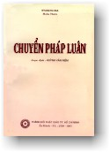
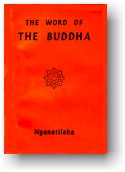

|
BuddhaSasana Home Page |
Vietnamese, with Unicode Times font |
|  |
Chuyển Pháp Luân và Tứ Diệu ÐếMaha
Thongkham và Huỳnh Văn Niệm dựa
theo quyển "The
Word of the Buddha" Tái bản năm 1995 tại Sài Gòn |
 |
Ghi chú: Trong phiên bản điện tử này, chúng tôi xin mạn phép biên tập và sắp xếp lại bố cục để quý độc giả dễ đối chiếu với bản Anh ngữ "The Word of the Buddha" của Hòa thượng Nyanatiloka (Bình Anson, tháng 08-2001). -ooOoo-
Trụ trì ngôi chùa Island Hermitage tại Dodanduwa (Tích Lan), ngài có quốc tịch Đức. Trước kia, ngài là giáo sư trường đại học Komazawa tại Tokyo, Nhật Bản, và cũng là tác giả của nhiều sách văn phạm về tiếng Pàli. Ngài Hoà thượng Nyanatiloka Maha Thera thông suốt sâu rộng Phật Giáo Nguyên Thuỷ, đầy đủ đức tin, cách đây hơn nữa thế kỷ đã rời bỏ công danh sự nghiệp xuất gia tu theo Chánh Pháp và trở nên bậc cao tăng có tên tuổi nhất thế giới. Những tác phẩm về Phật Giáo của Ngài rất nổi tiếng và thu hút rất nhiều độc giả Châu Âu. Nội dung quyển CHUYỂN PHÁP LUÂN gồm những huấn ngữ lâu đời nhất được xem như lời dạy của chính Ðức Phật Thích Ca Gotama đã thuyết ra cách đây hơn 2500 năm. Ðây là lần đầu tiên Chánh Pháp được diễn tả một cách liên tục một cách rõ ràng về những điểm căn bản của đạo Phật hầu giúp ích cho các bậc hành giả chọn được cây danh mộc trong đám rừng Phật Giáo phức tạp bao la trên khắp miền đông Á. -ooOoo-
Trong một Tôn Giáo, danh từ "tín đồ" thường được sử dụng để ám chỉ khối lớn những phần tử ngoan đạo, gia nhập cộng đồng tín ngưỡng, vì thấy, vì nghe những hoạt động của các nhà truyền giáo, hoặc những người vào đạo trước mình. Nhưng trên thực tế và cũng trong muôn một, ít ai thấu rõ mục đích cốt yếu của vị Giáo Chủ sáng lập ra Tôn Giáo đó. Sự kiện này tạo cơ hội cho một giai cấp lợi dụng sự mê tín của kẻ khác để thủ lợi và một giai cấp đông đảo hơn gấp muôn lần bị người lợi dụng mà không hay biết. Nhưng khi Tôn Giáo được bành trướng phong phú chừng nào thì giai cấp kể trên phát triển mạnh mẽ chừng nấy. Số lớn các nhà lãnh đạo tinh thần ít khi nói đến những yếu tố căn bản liên quan tới Giáo lý về đường lối cứu cánh mà thường hay đề cập đến những nghi lễ hoặc giáo điều nhằm mục đích thu hút tín đồ vì lợi ích riêng tư của mình. Ðạo Phật quan trọng nhất thế giới. Khối tín đồ cũng đông đảo nhất, nên phải lâm vào tình trạnh như vầy là lẽ tự nhiên. Ðức Phật nói Giáo Pháp là con đường khó đi. Trong kinh trung A Hàm (Majjhimà Nikayà). Ngài có thuyết:
Hiện nay số đông người tu Phật chúng ta ví như kẻ đi tìm trái ngọt mà ăn. Nhưng khi vào được trong vườn thì lại lo quan sát địa thế của miếng vườn, thưởng thức cỏ, cây, hoa lá ... nên không tìm đâu ra trái. Chỉ có những hành giả chân thành mong thoát khổ, mới thật tâm tìm kiếm quả ngon của đạo bằng pháp hành Thiền Ðịnh. Vì học nhiều tin bướng mà không hành thì đạo quả cũng chẳng thành. Hiện nay phong trào Thiền Ðịnh đang phát triển mạnh mẽ trong Ấn độ giáo và Phật Giáo. Nhưng hễ số người học Thiền gia tăng thì các vị Thiền Sư cũng thêm đông đảo. Mỗi vị bày ra một phương thức riêng về đường lối hành đạo, cho đó là đúng quy tắc của Ðức Phật và hiện hữu nhất. Ngặt nổi chúng ta đều là phàm nhân nên khó bề nhận định chánh tà. Ðại đức Nyanatiloka dày công chọn lọc, trích ra từ tạng kinh Pàli, những huấn ngữ đầu tiên của đức Thế Tôn thuyết tại vườn Lộc Giả (Isipatana) trong thành Ba La Nại (Bénarès) để độ 5 ông Kiều Trần Như, nhằm mục đích giải thích rõ rệt từng chi tiết những Pháp căn bản liên quan đến Thiền Ðịnh. Tất cả nội dung quyển "Chuyển Pháp luân" đều chú trọng về 4 Pháp: Tứ Diệu Ðế, Thập nhị Duyên khởi, Bát Chánh Ðạo, trong đó có pháp hành độc đáo là Tứ Niệm Xứ. Ðặc biệt là Ðại đức Hòa thượng Niyanatiloka đã dựa theo Vi Diệu Pháp (Abhidhamma) để mô tả rõ rệt những câu Phật ngôn về tứ đại, ngũ uẩn và pháp hành Tứ Niệm Xứ. Ðể cho hành giả dễ bề kiểm soát đường lối của mình cho khỏi lầm lẫn. Và chẳng ai có thể phủ nhận phương pháp chánh đáng của Ðấng Thiên Nhân Sư, thầy của cả Chư Thiên và nhân loại, là Ðức Phật Thích Ca Gotama. Nội dung quyển Chuyển Pháp Luân không có những tích truyện để thu hút độc giả mà chỉ gồm những pháp quan trọng về Thiền Ðịnh nhằm đem lại lợi ích cho những ai thật tâm muốn đi sâu vào đạo để thưởng thức mùi vị của đạo. HUỲNH VĂN NIỆM
-ooOoo- NHẬN ÐỊNH CỦA NHÀ PHẬT HỌC A. FOUCHER "Trên thế gian có hai hạng người vĩ đại với lý tưởng trái nghịch nhau. Một bên là kẻ mạnh đi chinh phục đất đai bằng võ lực để bành trướng đế quốc. Một bên là số rất ít những bậc hiền triết xây dựng Giáo lý không còn sự sợ hãi chi phối và thấm nhuần tình thương rộng lớn. Ðó là những bậc đại hiền ví như ngọc đèm từ xa rọi sáng con đường để giúp đoàn lữ khách dài vô tận tìm thấy nẻo đi. Và trong số đó có Ðức Phật thích Ca Gotama đã xuất hiện tại trung Ấn độ cỡ 500 năm trước Công nguyên. Những du khách có dịp đến viếng miền đông Á đều chứng minh rằng bậc vĩ nhân này (Ðức Phật) không có viết lách và để lại văn tự nào cả. Nhưng một khối lượng to lớn kinh điển hoặc được in trên giấy, khắc trên mặt đá hay viết trên lá buôn, ghi lại những lời vàng ngọc của Ngài đã thuyết ra bằng 10 thứ sinh ngữ: Singhalais, Miến Ðiện, Thái lan, Cao Miên, Ai Lao, Tây Tạng, Mông Cổ, Mãn Châu, Trung Hoa, Nhật Bổn và nhiều bản dịch bằng tiếng Âu châu. Hằng ngày vô số tín đồ các xứ đó nhiệt thành sùng bái, tụng niệm những huấn ngữ của Ngài. Con người đó (Ðức Phật) chẳng có chiếc ngai vàng, nhưng đế quốc tinh thần của Ngài lan rộng hàng trăm triệu tâm hồn. Một con người mà miền trung Ấn độ đã có dịp thấy đi khất thực trên đường phố lại được biểu lộ bằng những pho tượng vàng son ngồi chễm chệ oai nghi trên ngôi điện trang nghiêm rực rỡ, bao phủ khói hương trầm. Cho đến những người không theo đạo Phật cũng phải công nhận đức Thích Ca Mâu Ni là một khuôn mặt vĩ đại, vô cùng từ tốn, được khắp hoàn vũ tuyên dương. Ai nấy đều phải cảm phục Ðức Phật đã sáng tạo ra một Giáo lý độc đáo trên thế giới và đã xây dựng một cộng đồng đạo đức còn rạng rỡ cho tới ngày nay." A. FOUCHER -ooOoo- |
Chân thành cám ơn Đại đức Giác Đồng đã gửi tặng phiên bản điện tử (Bình Anson, tháng 08-2001).
[Trở
về trang Thư Mục]
updated: 01-08-2001